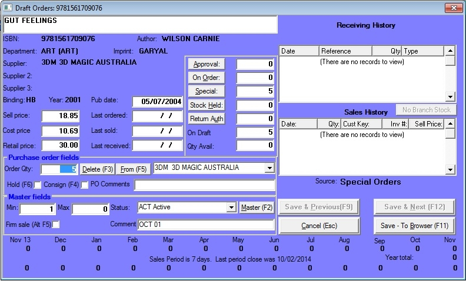
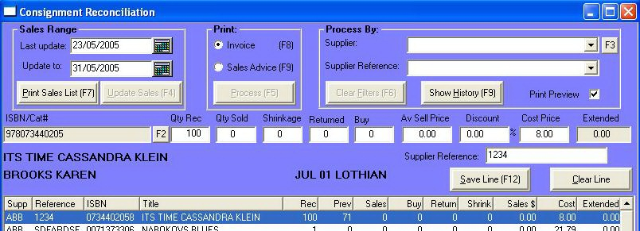

|
Consignments Inwards
|
Previous Top Next |


| · | Amend the cost price if required.
|
| · | If the cost price is to be calculated as a percentage of the average sell price, type that percentage into the Discount field and press the Tab key and the cost price will be recalculated.
|
| · | If you are have decided to pay for the stock before selling it, enter the quantity to be sold in the Buy field.
|
| · | If there has been any stock shrinkage and you are now going to pay for these items, enter the quantity in the Shrinkage field.
|
| · | If you have returned the stock to the supplier, but have not processed them as consignment returns, enter the quantity returned in the Returned field. This will reduce the quantity on consignment but leave the on hand figure untouched.
|
| Note: This procedure is only used to make corrections where stock was returned as non-consignment stock. If you want to process consignment returns, do so in the Draft returns window (main menu - Purchasing / Returns / Add / change )
|
| · | Click on Save line (F12) to save the changes.
|